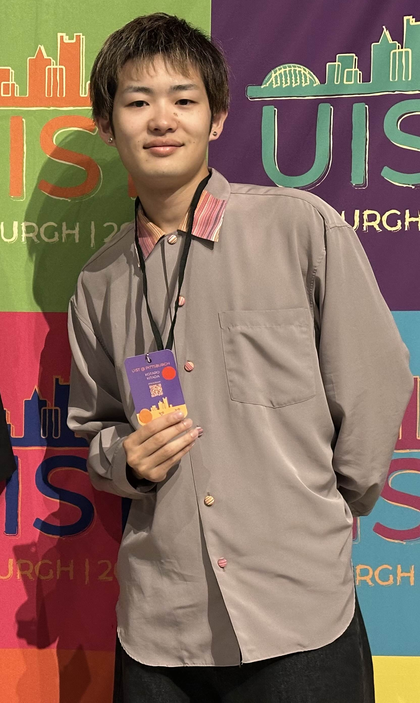

東海大学大学院 工学研究科
竹村研究室
コンタクトセンシング
ヒューマンコンピュータインタラクション (HCI)
再伝播する漏れ全反射 (RFTIR) を用いた
透明媒体におけるコンタクトセンシング
ACM UIST 2024（ピッツバーグ）にて
Oral発表を実施
再伝播する漏れ全反射に基づくタッチセンシングデバイス
透明な平面の両面からのタッチ入力を同時に検出できるセンシング技術「RFTIRTouch」を開発しました． 従来のFTIR（Frustrated Total Internal Reflection）方式では，片面からの接触しか検出できませんでしたが， RFTIR（Repropagated Frustrated Total Internal Reflection）を用いることで，両面タッチの同時検出を実現しています．
"RFTIRTouch: Touch Sensing Device for Dual-sided Transparent Plane Based on Repropagated Frustrated Total Internal Reflection"
in Proceedings of the 37th Annual ACM Symposium on User Interface Software and Technology (UIST2024), Article 113, 1–10. (Oral)
DOI: 10.1145/3654777.3676428 ↗"再伝播する漏れ全反射画像に基づく複数接触位置推定"
第26回 計測自動制御学会 システムインテグレーション部門講演会，1D2-12，2025年12月10日，広島県・広島市
"漏れ全反射の再伝播を用いたタッチデバイス"
ロボティクスメカトロニクス講演会2025，1A2-T05，2025年6月5日，山形県・山形市

〒259-1292
神奈川県平塚市北金目4-1-1
東海大学 湘南キャンパス